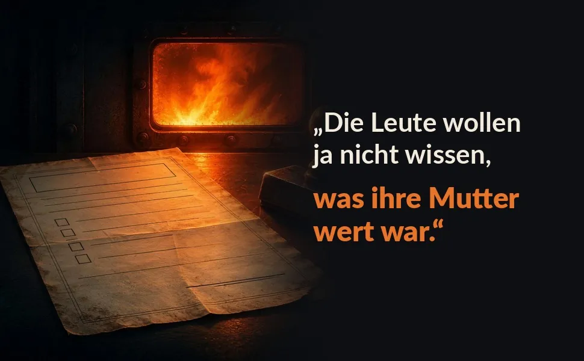
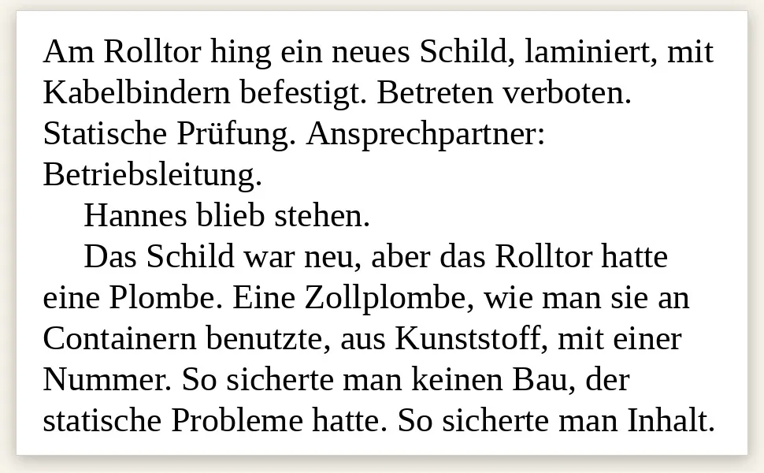
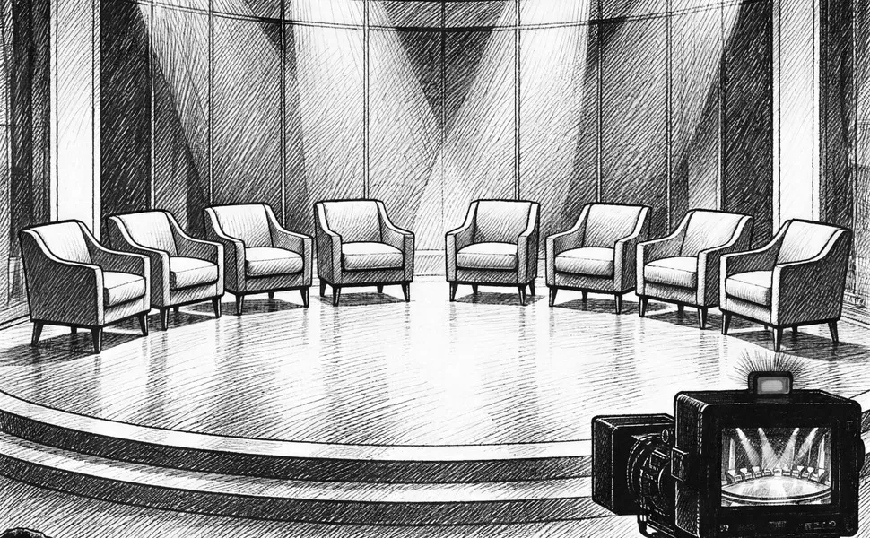

VERWERTET – Zustimmung bestätigt
Die Kallhoven-Akten · Band 1
Ein Gesellschaftsthriller über Würde, Gier und die Frage, wem ein Mensch nach seinem Tod gehört.
Öffnet amazon.de in einem neuen Tab.

Wem gehört ein Mensch nach seinem Tod?
Kallhoven im Rheinland. Ein Landesgesetz erlaubt hier die freiwillige Energiespende nach dem Tod, die Noretherm AG betreibt die Anlage. Ausgerechnet Hannes Haverkott hat die Frage aufgebracht, nachts im Leitstand, mit einem Post im Bürgerforum. Kurz danach ist er das Gesicht der Bewegung. Dann findet seine Schwester Rike in den Ordnern der Mutter ein altes Formular.

Blick ins Buch: Hannes vor Halle 9
Sein Chef hat ihm gesagt, er soll Halle 9 beim Rundgang auslassen. Er steht trotzdem davor. So geht die Szene weiter: Er ging um die Halle herum. Die Personaltür war abgeschlossen, auch das nichts Besonderes. Auf der Rückseite stand ein Container, so ein Bürocontainer, wie man ihn auf Baustellen hatte, mit einem vergitterten Fenster. Daneben lief eine Rohrleitung in die Halle, die nicht auf dem Plan war, den Hannes kannte. Eine Gasleitung, gelb lackiert, mit einem Absperrschieber, an dem ein Schloss hing. Er folgte ihr mit den Augen. Sie lief über eine kleine Rohrbrücke zur Sammelleitung, die zur Fackel und zum Heizkraftwerk ging. Dieselbe Sammelleitung, an der auch die Klärschlammvergärung hing. Und, das wusste er aus den Plänen, Linie M. Eine Gasleitung aus einer Halle, die angeblich nur leer stand. Neben der Personaltür, halb verdeckt von einem Mülleimer, hing noch ein zweites Schild. Ein altes, verblasst, aus Blech. Hannes musste sich hinknien, um es ganz zu lesen. Er schob den Mülleimer beiseite. Versuchsanlage V-M. Zutritt nur für unterwiesenes Personal. Verfahrensverantwortlich: Noretherm Forschung & Entwicklung. Darunter ein gelbes Warndreieck mit dem Symbol für Biogefährdung und eines mit der Flamme für entzündliche Gase. Und eine Zeile, klein, am unteren Rand. Inbetriebnahme: 03/2020.

Eine von 30 ganzseitigen Skizzen: das Studio der Talkshow
Im Taschenbuch und im Hardcover sind 27 Szenen als Zeichnung in Schwarz-Weiß zu sehen, drei weitere eröffnen die Akte. Hier das Studio von „Klartext am Rhein“: acht Sessel im Halbkreis, live, und Hannes mittendrin.
Kallhoven, Noretherm und alle Personen sind frei erfunden.
Öffnet amazon.de in einem neuen Tab.